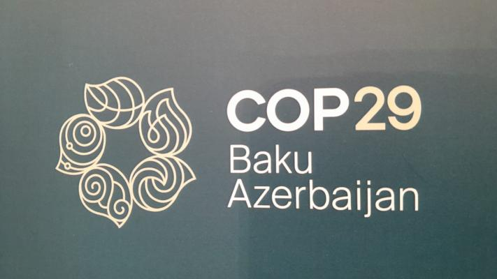
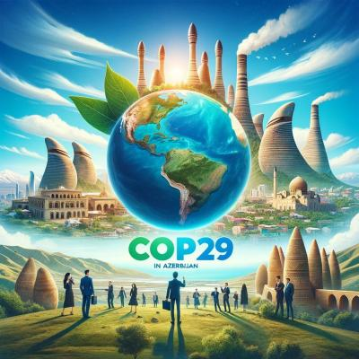

COP (Conference of the Parties), BMT-nin İqlim Dəyişikliyi üzrə Çərçivə Konvensiyası (UNFCCC) tərəflərinin konfransıdır. Bu beynəlxalq tədbir, iqlim dəyişikliyinə qarşı mübarizə aparmaq və ölkələrin iqlim siyasətini tənzimləmək məqsədilə keçirilir. COP sammitləri 1995-ci ildən başlayaraq hər il təşkil olunur və hər biri fərqli bir mövzu və gündəm əsasında həyata keçirilir.
COP tədbirinin əsas məqsədləri:
- İqlim Dəyişikliyinə Qarşı Qlobal Fəaliyyət: Dünyadakı dövlətlər və hökumətlərarası təşkilatlar iqlim dəyişikliyi ilə bağlı fəaliyyətlərini uyğunlaşdırır.
- Paris Sazişi və Emissiyaların Azaldılması: Paris Sazişi 2015-ci ildə COP21-də qəbul edilmişdir və məqsədi qlobal istilik artımını 1,5 dərəcə Selsi ilə məhdudlaşdırmaqdır.
- İqlim Dəyişikliyinə Uyğunlaşma və Dayanıqlıq: Qlobal istiləşmənin fəsadlarına qarşı dövlətlərin dayanıqlığını və uyğunlaşma qabiliyyətini artırmaq.
- İqlim Maliyyələşdirilməsi: İqlim dəyişikliklərinə uyğunlaşmaq və təsirlərini minimuma endirmək üçün inkişaf etməkdə olan ölkələrə maliyyə vəsaitləri ayrılması.
COP sammitlərində, dünyanın müxtəlif yerlərindən hökumət nümayəndələri, QHT-lər, alimlər və iqlim fəalları iştirak edir və qlobal səviyyədə iqlim siyasətlərinin inkişaf etdirilməsi ilə bağlı müzakirələr aparılır.
Məsələn, COP28 2023-cü ildə Birləşmiş Ərəb Əmirliklərində keçirilir, lakin COP29 tədbirinin hələ harada keçiriləcəyi ilə bağlı qərar verilə bilər. Bu sammitlər gələcək iqlim siyasətlərini formalaşdırmaq üçün kritik əhəmiyyət daşıyır.
COP-un əsas xüsusiyyətləri:
- Dövlətlərin iştirakı: Konfransda təxminən 200 ölkənin nümayəndələri iştirak edir və hər bir dövlət iqlim dəyişikliyi ilə bağlı öhdəliklərini yenidən nəzərdən keçirir.
- Paris Sazişi (COP21): 2015-ci ildə COP21-də qəbul edilmiş Paris Sazişi qlobal temperaturun 2°C-dən aşağı saxlanması və daha ideal olaraq 1.5°C-yə yaxınlaşdırılması hədəfini müəyyən edir.
- Milli hədəflər (NDC-lər): Hər ölkə öz milli qatqı planlarını (NDC) təqdim edir və 2030-cu ilə qədər karbon emissiyalarını necə azaltmağı planlaşdırdığı təsvir edilir.
- Maliyyə dəstəyi: İnkişaf etmiş ölkələr iqlim dəyişikliyi ilə mübarizədə inkişaf etməkdə olan ölkələrə maliyyə dəstəyi göstərmək öhdəliyini üzərlərinə götürüb.
- Yeniliklər və texnologiyalar: Konfranslar həmçinin iqlim dostu texnologiyaların yayılması və innovasiyaların dəstəklənməsi üçün platforma kimi fəaliyyət göstərir.